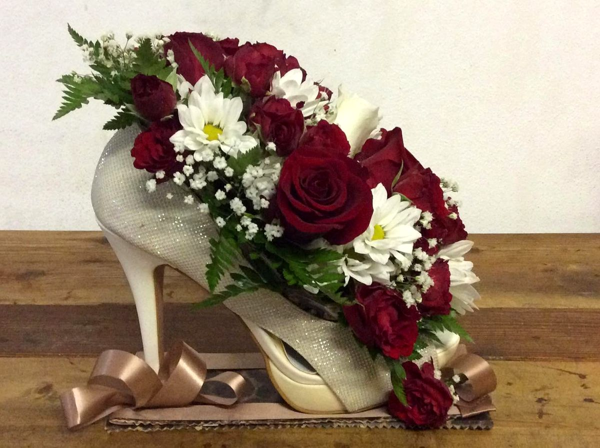
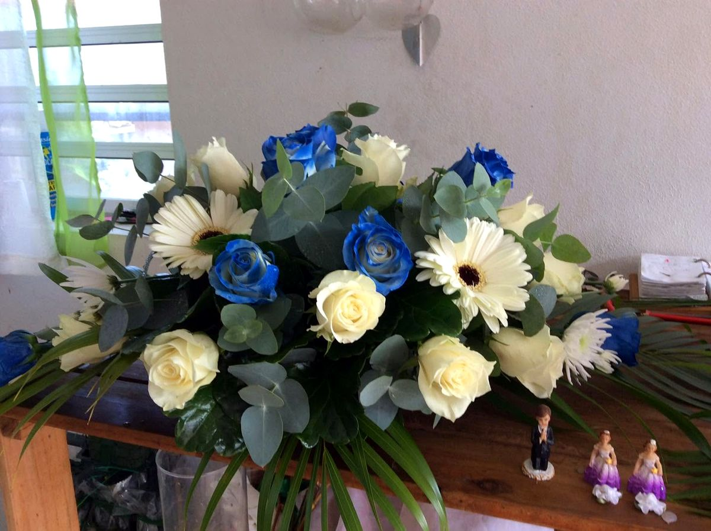
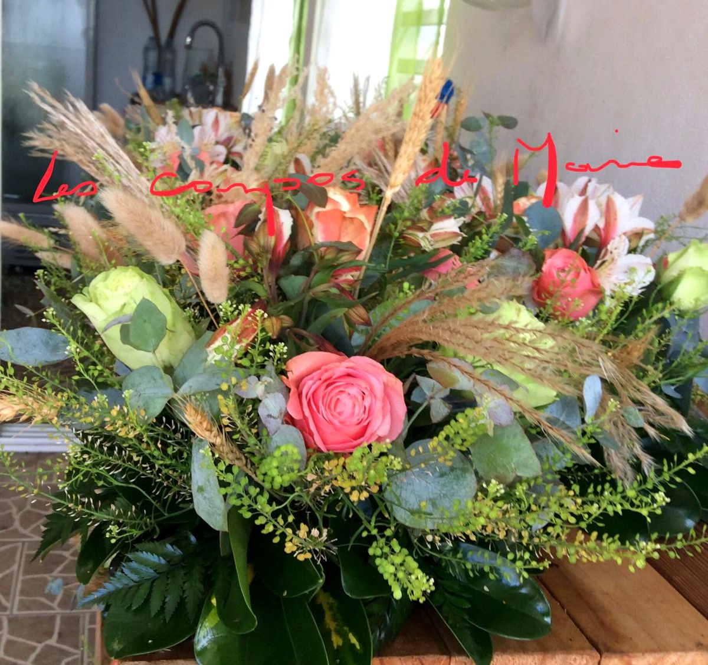
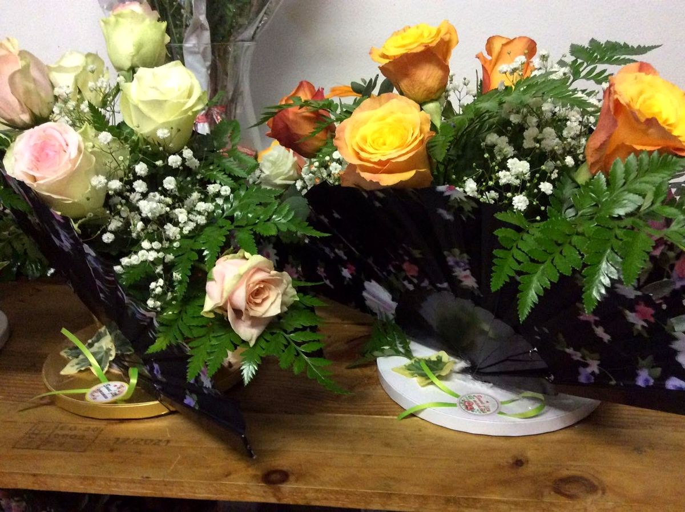
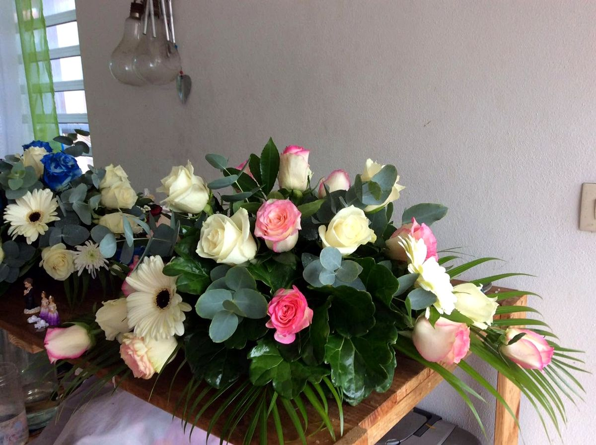
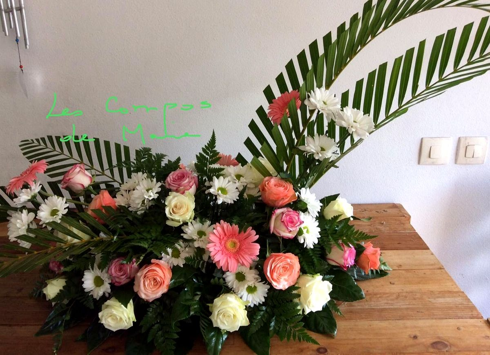
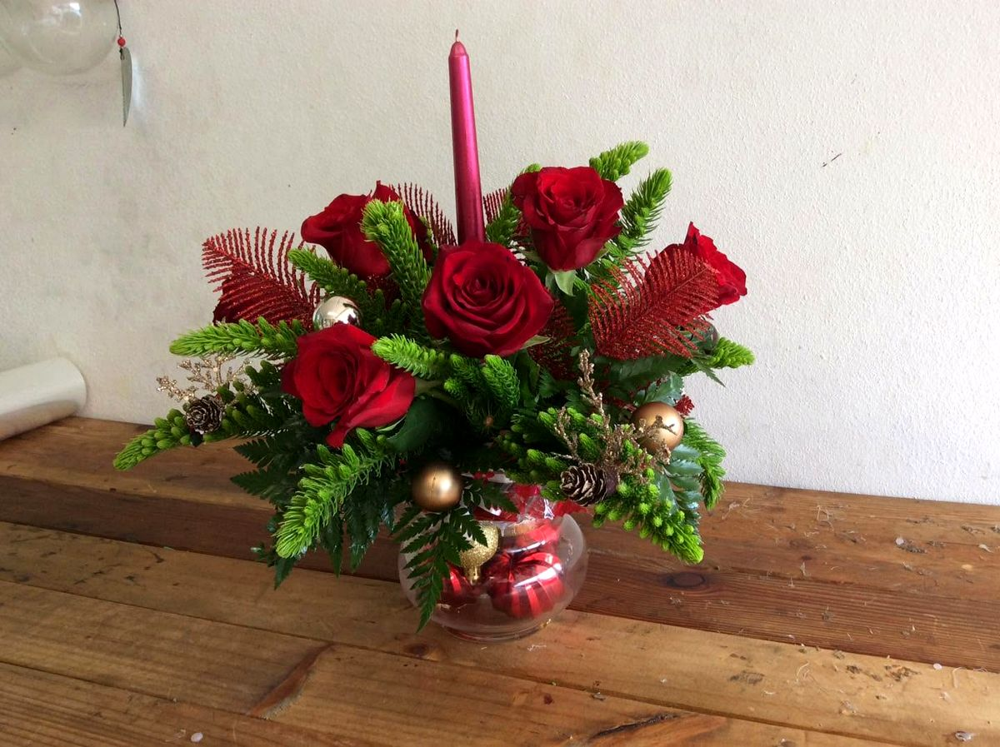
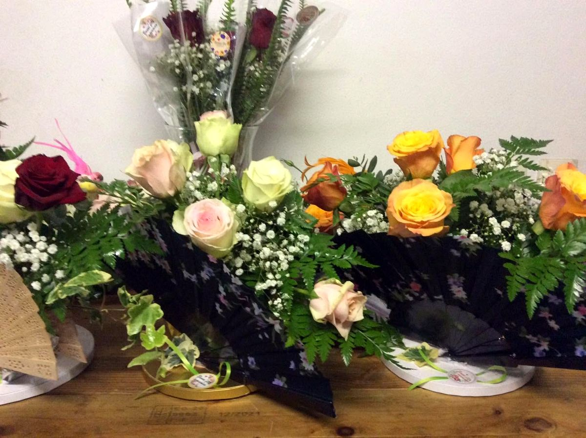
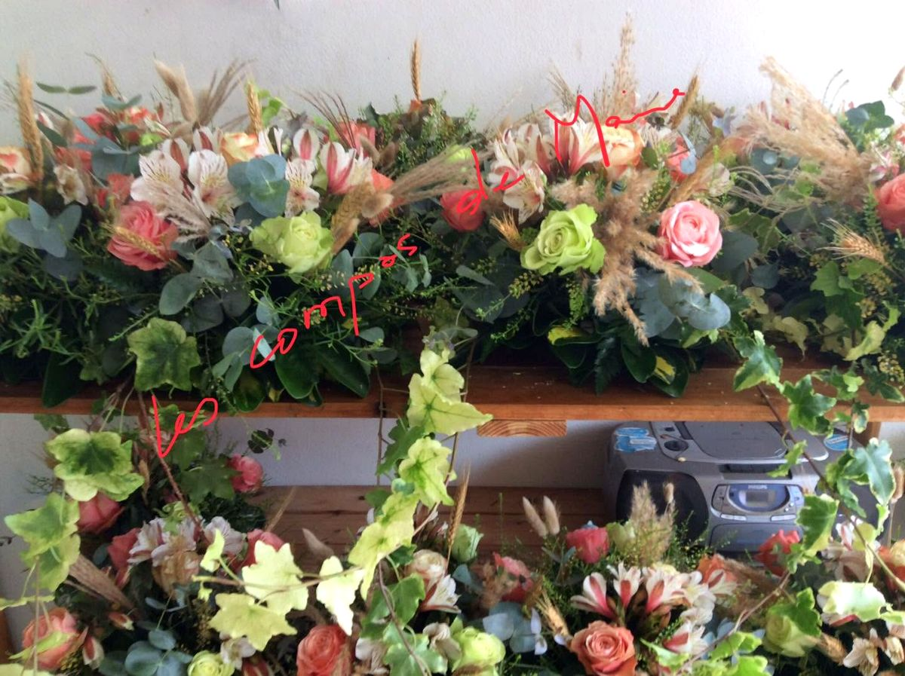

Des compositions florales à prix modérés, pensées pour vos fêtes, vos tables et vos plus beaux jours.
Roses, gerberas, protéas, feuillages tropicaux : chez Les Compos de Marie, chaque composition est assemblée pour une occasion précise, du centre de table d’une confirmation au bouquet de fête.
Et parfois, la fleur s’installe là où on ne l’attend pas : dans une chaussure, pour une création qui fait sourire toute la table.









Des compositions pour habiller les tables d’une confirmation, en double version.
Une création originale, roses rouges et marguerites, posée dans un escarpin blanc.
Des compositions préparées pour le 24 décembre.
Des bouquets au parfum de jardin, tout en douceur.
Des matinées de vente en plein air à Cambuston, de 6h30 à 11h30.
Choisissez l’occasion, les couleurs et la date : votre message arrive tout prêt sur WhatsApp, il ne reste plus qu’à imaginer la composition ensemble.
Démonstration : sur la page finale, le message part directement vers votre WhatsApp.